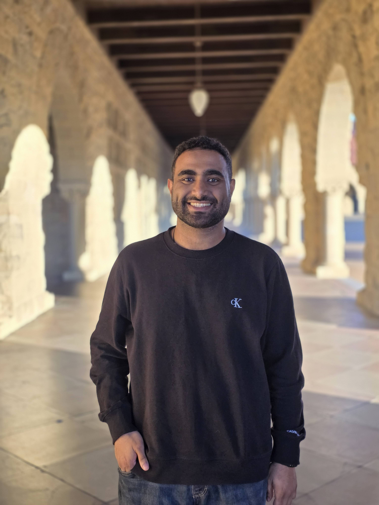

I am a PhD researcher at the Max Planck Institute for Software Systems working at the intersection of speech and language modeling, computational neuroscience, and brain-aligned machine learning. My research investigates how fine-tuning speech models on human fMRI responses can improve semantic representations, model interpretability, and cross-participant generalization.
I am broadly interested in representation learning, speech processing, natural language understanding, and leveraging brain data to build more human-like AI systems.
Education, research experience, publications, awards, and more.
Lifelong football fan and player — always up for a pickup game.
Enjoy listening to and exploring a wide range of genres.
Love exploring new places, cultures, and cuisines.
Books on science, philosophy, and the occasional novel.